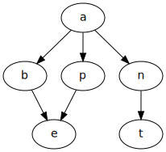
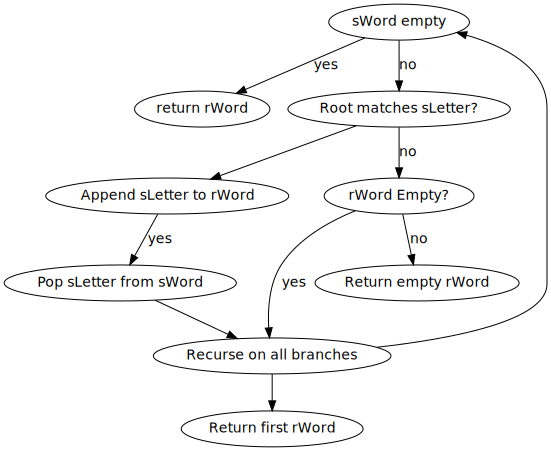

I’m obsesed with recursion schemes. And I’d like to give a practical example of what they are and why they are practical. For now I’ll stick only to 1 recursion scheme - catamorphisms (aka folds or, for the JS folk, a more generic reduce).
A search tree stores words of a senence in alphabetical order. Below we have a tree storing: “ant”, “and”, “ape”, “at”:

To search for a word we’ll use the following algorithm where:
sWordsLetterrWord
And here’s some haskell code to demonstrate this:
import Data.Monoid (First (..))
data STree = STree Char [STree]
deriving (Show)
type SWord = String
type RWord = Maybe String
findWord :: SWord -> STree -> RWord
findWord sWord = fmap reverse . findWord' Nothing sWord
findWord' :: SWord -> STree -> [RWord]
findWord' [] tree = collectWords tree
findWord' sWord@(s:ss) (STree c branches)
| s == c = foldMap ((c:) . findWord' ss) branches
| otherwise = []
collectWords :: STree -> [RWord]
collectWords (STree c branches) = foldMap ((c:) . collectWords) branchesThe idea behind recursion schemes follows a similiar idea of defunctionalization. So I’ll cover that first.
Defunctionalization is the technique of replacing a function with a datastructure. The idea is that the programmer can bind arguments to a function without actually evaluating that function and then later convert that datastructure into a value. Converting that datastructure into a value is the same as just evaluating the original function with arguments.
Here’s an example:
isSumEven :: Int -> Int -> Bool
isSumEven x y = (x + y) `rem` 2 == 0
foo :: Bool
foo = isSumEven 2 3isSumEven can be defunctionalized to:
data Expr where
IsSumEven :: Int -> Int -> Expr
apply :: Expr -> Bool
apply (IsSumEven) = (x + y) `rem` 2 == 0
foo :: Bool
foo = apply (IsSumEven 2 3)Notice how foo’s definition is replaced. Instead of calling isSumEven it first constructs an Expr value and then deconstructs that value using apply.
In silly examples like this there’s no point to defunctionalization, however, it’s power comes in when you want to:
The last bullet is what we’ll focus on from here out. We are going to take the recursive tree code from above and re-write it so that we don’t have to write complex recursive functions.
Recursive functions are tricky and are not as straight forward to defunctionalize as non-recursive functions. However, I’ve discovered a few techniques. First, recursive functions are unique to their use cases. Here’s a list of questions to ask yourself when writing the
The answers to the last 2 questions we can find by analyzing the recursive code above:
findWord' :: SWord -> STree -> [RWord]
findWord' [] tree = collectWords tree
findWord' sWord@(s:ss) (STree c branches)
| s == c = foldMap ((c:) . findWord' ss) branches
| otherwise = []Here’s the recursion-scheme code:
newtype Fix = Fix { unFix :: f (Fix f) }
cata :: (Functor f) => (f a -> a) -> Fix f -> a
cata alg = c where c = alg . fmap c . unFix
data ListF e a
= Nil
| Cons e a
deriving (Functor)
type List e = Fix (ListF e)
type SWord = List Char
type RWord = List Char
nill :: List e
nill = Fix Nil
cons :: e -> List e -> List e
cons e l = Fix $ Cons e l
data STreeF = STree Char [a]
deriving Functor
data STree = Fix StreeF
newtype SearchF a =
SNil (STreeF a)
| SCons Char ???
deriving Functor
findWordAlg :: SearchF [RWord] -> [RWord]
findWordAlg (SNil (StreeF c rwords)) = cons c <$> rwords
findWordAlg (SCons s (StreeF c rwords)) =